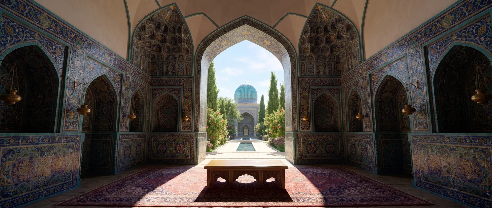

Timur’un büyük satrancı · XIV. yüzyıl
Timur Satrancı
İki kaleli 11×10 tahta, her tarafta 28 taş — zürafa, deve, kuşatma kulesi, gözcü. Semerkant’ta oynanan oyunu oynayın.

«Küçük satranç, büyüğünün yanında hiçtir.» 11×10 tahta, iki kale, zürafalar, develer, kuşatma kuleleri ve şah olabilen bir piyon.
Zurafa
- Bilgisayara karşıAltı rakip — acemiden Timur’un kendisine
- Arkadaşla bağlantı üzerindenKayıt yok: bağlantıyı gönderin ve oynayın
- Aynı ekranda iki kişiTahta aranızda, sırayla hamle
- Taşları tanıyınZürafa, gözcü ve diğerleri nasıl gider — beş dakikada
- Timur’un savaşlarıArazi haritalarında sekiz savaş: İsfahan’dan İzmir’e
- Tek hamlelik problemlerÖzel kurallar üzerine tek hamlelik problemler: generalden piyonların piyonuna
Oyunlar bahçesi
Timur’un sarayının ve Semerkant çevresindeki bozkırın oyunları. Her birinin ansiklopedide bir maddesi var: kesin bilinenler ve rivayet olarak kalanlar.
- ŞatrançHem Timur’un büyük satrancının hem de modern satrancın doğduğu 8 × 8 küçük satranç. Ferz ve fil zayıftır, bu yüzden oyunlar yavaş ve konumsaldır.
- Tavla (nard)Zar ve pullar. Fars geleneğine göre bilge Büzürgmihr, Hindistan’dan gönderilen satranca karşılık nardı icat etti.
- Togız korgoolTanrı Dağları’ndan Kazakistan’a bozkırda bilinen çukur ve taş oyunu: her tarafta dokuz çukur, çift sayıyla alma.
- Aşık atmaAşık atma: ağır atış kemiği saka ile aşıklar halkadan dışarı atılır. Oyun kemikleri Orta Asya’nın her yerinde kazılarda bulunur; Kazak aşık oyunları UNESCO miras listesindedir.